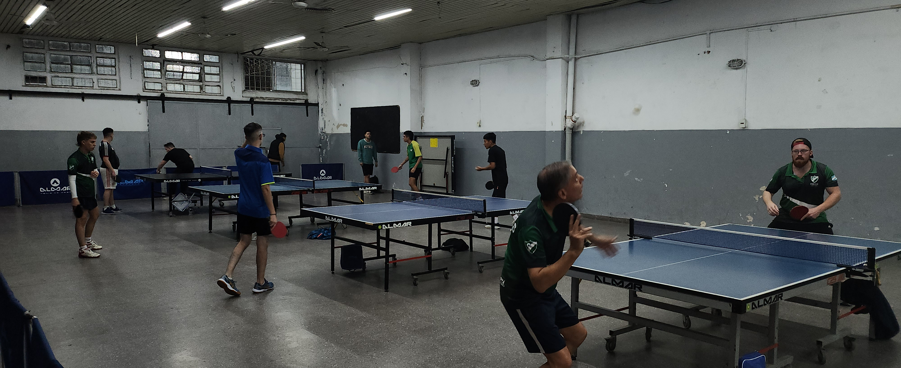
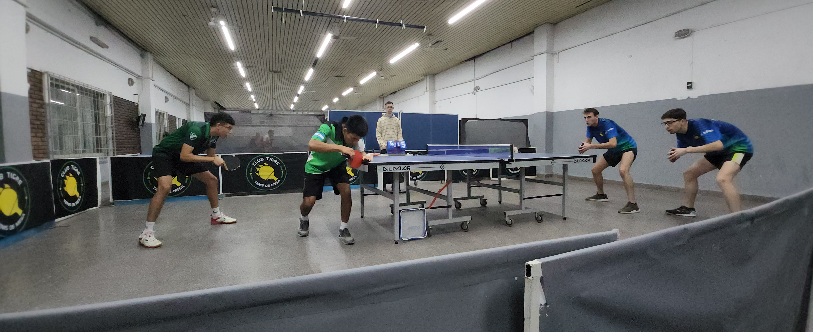
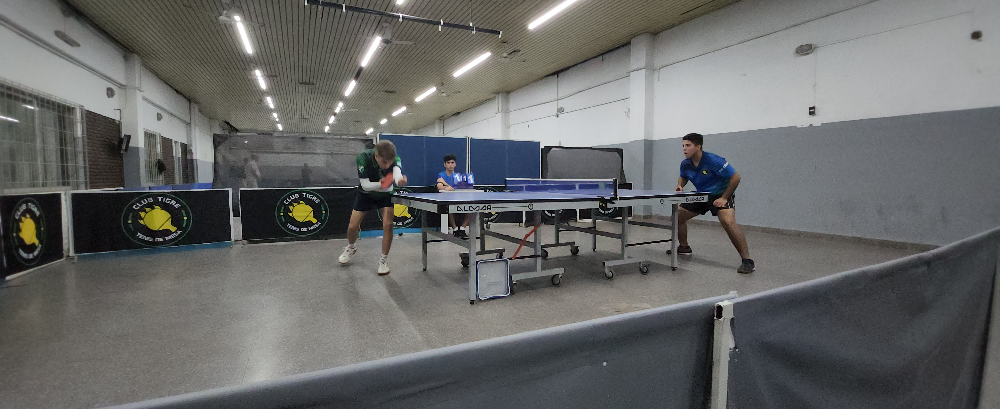
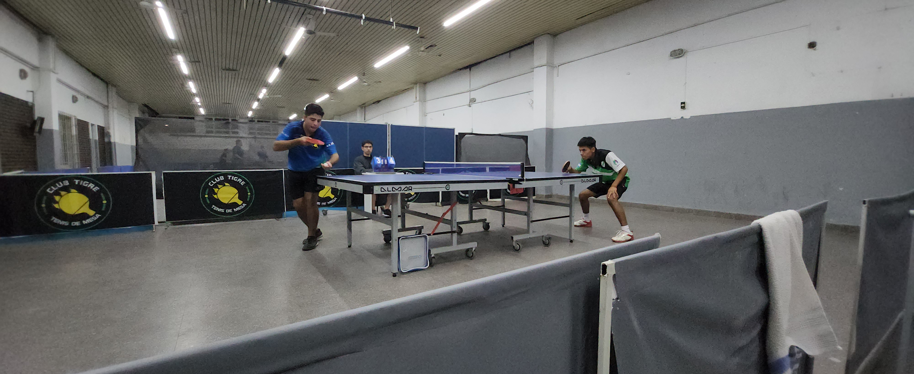

El lunes 17 de Abril, Padilla ha visitado al club Tigre Juniors para disputar la 9na fecha de la
Superliga de Tenis de Mesa. Ya con el clima un poco mas frío de lo que venían siendo las últimas dos
fechas, pero siempre listos para competir. Esta vez lo haría con uno de los equipos que se encuentran en
la parte alta de la tabla de posiciones de la categoría B. El poderoso Tigre que venía de vencer a Rioja
por 3 a 2.
Los integrantes inscriptos para esta fecha, fueron, por el local: Matías Marsaglia, Manuel Orobio,
Nicolás Marsino, Tomás Riestra, Mateo Carranza e Ignacio Sosa. Por el lado de Padilla la lista incluyó
a: Juan Pareja, Miguel Barja, Maciel Farfán, Nicolás Bellusci, Alejandro Vígolo y Juán Carlos Greco.

El equipo entraba en calor en las mesas auxiliares del Club Tigre Jrs.
La serie dio comienzo, puntualmente, a las 20hs. Padilla estrenaría nueva pareja de dobles, ya que
Miguel Barja y Maciel Farfán fueron los seleccionados para disputar el primer punto de la competencia,
mientras que Tigre optó por Matías Marsaglia y Manuel Orobio. El partido se presentó extremadamente
parejo en los primeros 3 sets y luego se abrió una pequeña brecha, pero sin embargo se disputó a 5
juegos. Los dos primeros sets, luego de que Padilla estuviera con un doble Set Ball, Tigre se impuso por
12-10. Luego, el equipo tomó la confianza necesaria para afrontar el partido y terminó por ganarlo. Los
resultados fueron: 10-12, 10-12, 11-9, 11-8 y 11-7. El primer punto se venía para Martelli.
Llegaría, así el momento del segundo punto de la serie, que sería disputado por Tomás Riestra, por el
lado de Tigre y por Juan Pareja, el colombiano de Padilla. Aquí, si tienen 10 minutos, les recomiendo
que vean el partido. Por momentos se jugaron punto realmente de alto vuelo y jerarquía. El partido
comenzó con dos sets parejos que se los repartieron entre los competidores por igual marcador: 13-11.
Luego Riestra mostró un gran nivel de juego que logró neutralizar los ataques violentos y repentinos del
colombiano, llevándose los otros dos sets seguidos. Los parciales: 13-11, 11-13, 11-7, 11-7. Tigre
empataba la serie en uno y se venía el tercer encuentro.

Farfán y Barja vs Marsaglia y Orobio

Tomás Riestra vs Juan Pareja
El equipo de la calle Castelli, dispuso salir a jugar el tercer punto de la serie, con Nicolás Morsino,
mientras que Padilla mandó a la mesa a Maciel Farfán. El primer set encontró a un Maciel Farfán frío y
atacando bolas contra puntos largos, cuando no debía hacerlo. Se lo vió bastante desconcertado durante
todo ese primer set que duró, realmente, poco. Tigre ganó ese primer set por 11-3 y no pareció
despeinarse el representante del local. Luego llegarían los siguientes sets, en los que Maciel comenzó a
jugar contra los puntos largo de Morsino, pero esta vez pensando cuando atacar y cuando pasar la pelota.
Una vez que le agarró la mano al juego, ya no hubo piedad para el local y la serie se pondría 2-1 a
favor de Padilla que solo necesitaba uno de los dos partidos siguientes para llevarse la serie a casa.
6-11, 11-6, 3-11 y 7-11 fueron los resultados parciales del tercer punto de la serie.
Volvía a la cancha Tomás Riestra, quien había mostrado un sólido desempeño en su partido anterior y,
claramente, estaba con la confianza bien alta para enfrentar a Miguel Barja, que sería el representante
de Padilla en este punto. El partido, a juzgar por el resultado final, debió ser simple para Tomás, pero
lo cierto es que viendo los parciales, Miguel no tuvo la suerte de poder cerrar un set a su favor. El
primer set se lo quedó Tigre por 11-6, también se quedaría con los otros dos sets, pero en esta
oportunidad Tigre los ganaría por un doble 17-15. La serie estaba empatada y la suerte echada… el que
ganara el próximo punto se llevaba la serie.

Tomás Riestra vs Miguel Barja
El último punto de la serie, se caía de maduro que sería entre Matías Marsaglia y Juan Pareja, y así
fue. Cerca de la 23hs comenzó el encuentro entre estos dos jugadores. El local hizo un partido de menor
a mayor. En el primer set y parte del segundo, intentó pegar y ganar los puntos por medio de sus
definiciones, esto no se le dio muy bien ya que había algo de falta de precisión, sumado a que el
colombiano metía la mayoría de lo que tiraba. Así, el primer set se lo llevó Padilla por 11-6. Luego la
estrategia de Marsaglia cambió y fue un poco mas “prolijo”, pegó cuando consideró que lo podía hacer y
defendió cuando lo creyó conveniente. Este juego desconcertó un poco al colombiano, que tomó la
iniciativa de los ataques, pero generalmente de manera apresurada, por lo que a veces encontraba los
bloqueos del de Tigre y las otras, directamente el suelo del salón. Esta misma conducta se mantuvo en
los 3 sets siguientes que quedaron del lado del equipo local, que ganaría la serie por 3-2, luego de
llevarse el tercer punto de la serie por los parciales: 6-11, 11-7, 11-4 y 11-6.
Con un solo partido por disputarse, por la 9na fecha, Padilla está ocupando el puesto 7 de la tabla de
posiciones. Lo que lo ubica entre los equipos que disputarían los play off, posteriores a la fase
regular de la competencia. Es muy importante ganar el próximo encuentro, ya que será contra un rival
directo, que tiene la misma cantidad de puntos que el club de Martelli. Hablamos de Nichia que, con 14
puntos, está en el 6to puesto por diferencia de partidos ganados (+5 para Nichia y +3 para Padilla). En
el caso de que Cultural gane su partido contra Social Club, la fecha cerraría con Padilla en el 8vo
lugar de la tabla y a 4 fechas del cierre de la fase regular.
A continuación, les dejamos todos los puntos de la serie contra Tigre y la Tabla de posiciones, que la
actualizaremos en cuanto tengamos conocimiento del resto de los encuentros de la fecha.